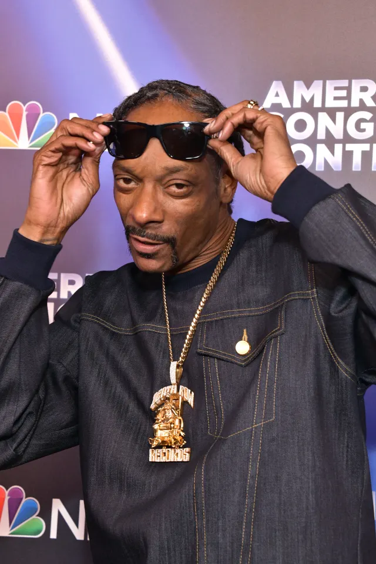

<!DOCTYPE html>
<html lang="en">
<head>
    <meta charset="UTF-8">
    <title>Twitter Build</title>
    <link rel="stylesheet" href="css/resets.css">
    <link rel="stylesheet" href="css/layout.css">
    <link rel="stylesheet" href="css/twitter.css">
</head>

<body>
<div class="page-wrapper">
    <div class="container grow">
        <div class="row grow">
            <aside class="column left-sidebar">
                <div class="logo-wrapper">
                    <div class="column"></div>   
                </div>
                <div class="home-wrapper">
                    <div class="column">
                    </div>
            </aside>
            <main class="column">
                <section class="container twitter">
                    <div class="row justify-space-between align-center">
                        <div class="column shrink">
                            <div class="avatar-wrapper">
                                
                            </div>
                        </div>

            </main>
            <aside class="column right-sidebar">

            </aside>
        </div>
    </div>


    </div>

</body>
</html>